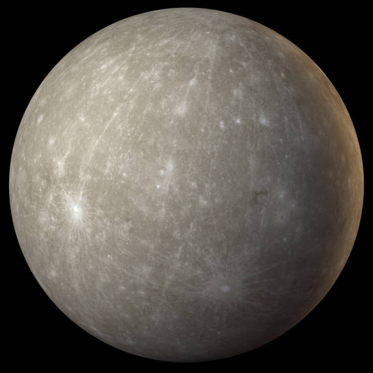
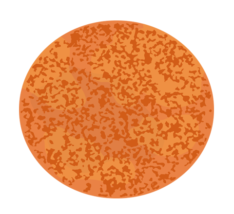
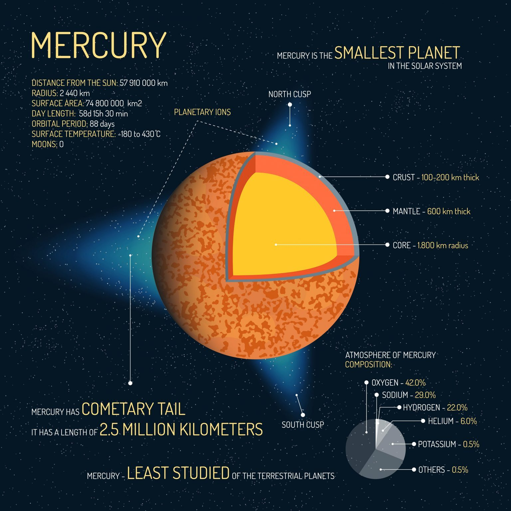

Mercury Haqqında Məlumat
Mercury is closest to the sun. But it’s so hard to study because it’s closest to the sun. This is because it’s so hot. For example, the side facing the sun reaches temperatures of 430°C. Mercury is covered with impact craters. Astronomers name craters on planet Mercury with the names of famous musicians, artists, and writers like Beethoven, Shakespeare, and van Gogh. Surface Temperature: -180 to 430°C Distance to Sun: 57,910,000 km Moons: 0 Radius: 2,440 km It’s tiny with a radius of only 2,440 km making it the smallest planet in the solar system. If you combined about 18 Mercury-sized planets, it would be the equivalent size to Earth. Mercury has a comet-like tail that extends as far as 2.5 million kilometers long. Scientists have figured out that it’s sodium sputtering from its surface. One day on Mercury is 59 Earth days. Because Mercury was formed close to the sun which is hot, it’s mostly iron.
Şəkil


